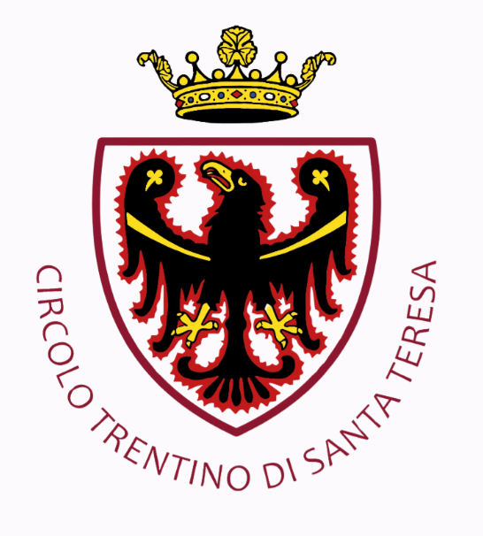

Santa Teresa
Santa Teresa é conhecida por suas festas tradicionais, culinária típica e comunidades engajadas em preservar sua cultura. A Circolo Cultural Tours atua localmente para valorizar essas manifestações.

Santa Teresa é conhecida por suas festas tradicionais, culinária típica e comunidades engajadas em preservar sua cultura. A Circolo Cultural Tours atua localmente para valorizar essas manifestações.